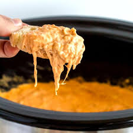

Buffalo Chicken Dip

Description
Hot & Spicy Buffalo Chicken Dip, perfect for any occasion!
Ingredients
To make this delicious Buffalo Chicken Dip recipe you will need the following:
- Approx. 1 lbs. Chicken (amounts will vary for how many you make this for).
- 4-6 lbs of cream cheese
- 8 oz. of bleu cheese crumbles
- Bottle of your favorite Hot Sauce
Steps
- Partially cook chicken off in the oven
- Put cream cheese and hot sauce in pot to melt and mix
- Once the cream cheese is soft enough to mix, shred the chicken and add it to the pot
- Continue cooking on med-low until boiling and chicken is done
- Add bleu cheese, stir well, and enjoy!